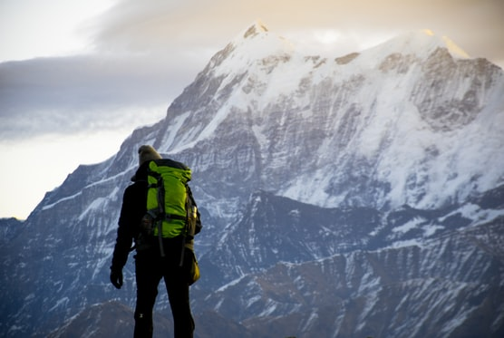
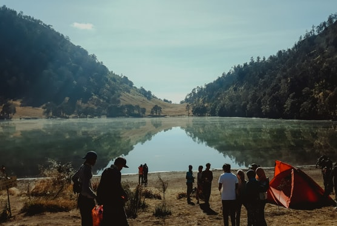

Everest camp trek
Everest base camp trek is without a doubt, one of the most renowned travel destinations in the world.
All Details
Everest base camp trek is without a doubt, one of the most renowned travel destinations in the world.
All Details
Join small guided group walks, enjoy a challenging trek, or a luxury private guided walk which can be made especially for you.
All DetailsDiving in Andaman Beaches is exceptional. The costal belt surroundings is one of the richest coral reef ecosystems in the world.
All Details
“Travel makes one modest. You see what a tiny place you
occupy in the world.”– Gustav Flaubert
Exploring will
make you want to pack your bag, book that ticket and jet
away.
Wed 28 sept 2023 : Port of Spain City Tour and Birdseye
Fort View.
Sat 1 oct 2023 : Tour the Gasparee Caves.
Tues 4 oct 2023 : Trinidad North Coast Experience.
and many more ......


Expert-written travel blogs to inspire your next adventure across India